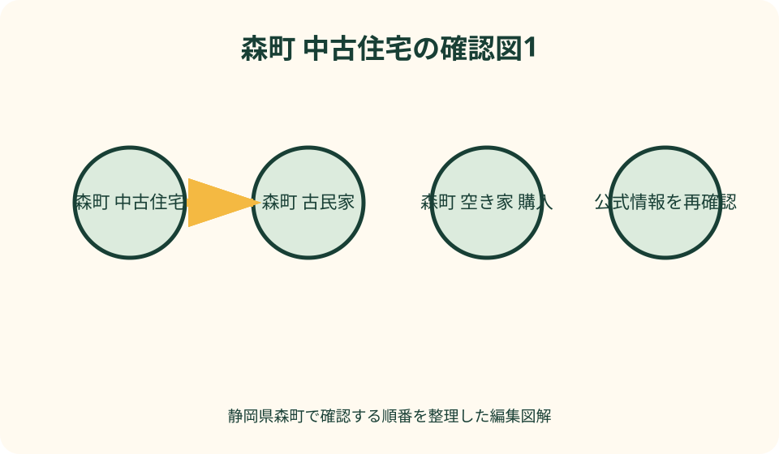
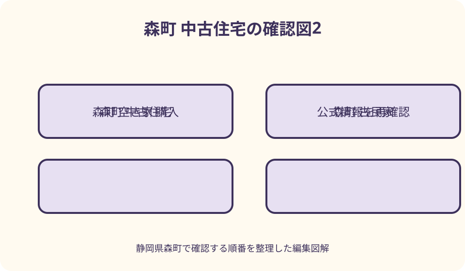

移住・住まい｜最終確認 2026-08-10
静岡県森町で中古住宅・古民家を買う前の確認ガイド
静岡県森町の中古住宅・古民家は、空き家バンクで候補を見つけた後、契約とは別の調査工程が必要です。土地と建物の登記事項証明書・地図・図面、境界と接道、建物状況調査、耐震性、雨漏り、給排水、残置物を物件ごとに確認し、改修業者には同じ条件で見積りを依頼します。森町は情報提供を行いますが、交渉や契約を行わないと明記しています。価格の安さだけで進まず、未確認事項の担当者、期限、費用負担を契約書面へ反映できるか、宅地建物取引業者、建築士、土地家屋調査士、司法書士など適切な専門家へ確認してください。

編集イラスト空き家バンクは購入保証ではなく候補を探す入口
森町空き家・空き地バンクは、町内の空き家・空き地の情報を登録し、利用希望者へ提供する制度です。町公式は、町が物件の仲介、交渉、契約、管理を行わないと明記しています。掲載されたことを、町が品質や権利関係を保証したこととは読めません。
物件公開ページの価格、間取り、写真は候補を絞る材料です。町公式には情報が申請時点の状況に基づき、実際と異なる場合があるとの注意もあります。掲載日や更新日だけでなく、現在も売却対象か、条件変更がないかを申込窓口と所有者側へ確認します。
見学や交渉を希望する場合、町所定の利用申込書と同意書を提出する流れが案内されています。優先交渉権の扱いも公開ページに記載されるため、見学予約、資料請求、購入申込みがそれぞれ何を意味するかを混同しないことが大切です。
最初の一覧には、登録番号、所在地、売却か賃貸か、窓口、更新確認日だけを書きます。価格の高低や外観の好みはまだ評価せず、調査資料を入手できる物件から比較すると、印象だけで一件へ固執するのを避けられます。
購入判断を五つの箱へ分けて記録する
確認事項は、建物、土地、インフラ、改修・片付け、契約の五つに分けます。一枚のチェック表へ混在させると、雨漏りの修繕費と境界未確定の問題が同じ『要確認』になり、重要度と担当者が見えなくなるためです。
各項目には、確認した資料名、資料の日付、説明者、現地で見た位置、未回答、次の担当者を残します。口頭で『大丈夫』と聞いた場合も、何について、どの範囲を、誰が確認したのかを書けなければ未確認として扱います。
古民家という呼称には、築年数、工法、保存状態を一律に示す効力がありません。太い梁や土壁などの魅力と、基礎、屋根、耐震、断熱、給排水の状態は別に調べ、名称から性能を推測しないようにします。
購入可否を一人の専門家へ丸ごと委ねるのでもなく、担当を分けます。建物は建築士等、境界は土地家屋調査士、登記や権利は司法書士、契約条件は宅地建物取引業者等へ相談し、案件に応じて必要な範囲を決めます。
最初の現地見学で生活と劣化の手掛かりを分ける
初回見学は晴天の昼だけで終えず、許可を得られるなら雨天後や異なる時間帯の周囲も確認します。ただし私有地へ無断で入らず、床下、屋根裏、屋根上など危険な場所は自分で潜らず、専門家の調査範囲に回します。
外では屋根面、雨樋、外壁、基礎、地面の傾斜、擁壁、敷地内の水の流れを位置付きで記録します。ひびや変色を見ただけで原因を断定せず、写真番号を付けて建物状況調査や見積り時の質問にします。
室内では天井と壁の染み、床の沈みや傾きの感覚、建具の開閉、におい、結露跡、虫害らしい痕跡を確認します。見た目が新しい仕上げでも下地の状態は分からないため、改装済みという説明だけで調査を省きません。
生活面では携帯通信、道路幅、駐車と転回、買物・通院経路、ごみ出し場所、日照、近隣との距離を確認します。これらは建物の欠陥とは別ですが、住み始めてからの継続負担になるため、家族全員が現地で確かめる項目です。

建物状況調査の範囲と限界を先に理解する
国土交通省の既存住宅状況調査は、登録講習を修了した建築士が、定められた方法基準に沿って建物の構造耐力上主要な部分や雨水の浸入を防止する部分などを調べる仕組みです。実施者の資格と講習修了状況を確認します。
調査を頼む前に、床下・小屋裏へ進入するか、設備配管、シロアリ、耐震診断が含まれるかを質問します。目視中心の建物状況調査と、破壊を伴う詳細調査、耐震診断、設備点検は同じではなく、基本調査だけですべての不具合を発見できるとは限りません。
売主側に過去の調査報告がある場合は、調査日、調査者、当時の建物状態、調査後の修繕や災害を確認します。古い報告書を現在の状態の証明として使わず、新たな調査が必要かを建築士へ相談します。
報告書では劣化事象の有無だけでなく、調査できなかった場所と理由を読みます。家具で隠れた壁、進入できない床下、積雪や雨で見られなかった屋根など、未調査範囲は契約前にどう扱うかを決める必要があります。
耐震は築年だけでなく現況と改修履歴で確認する
建築年月は耐震確認の入口ですが、年月だけで現在の安全性を断定できません。増改築、壁の撤去、基礎や屋根の状態、劣化、過去の補強内容が影響するため、確認済証、検査済証、設計図、工事記録の有無を尋ねます。
森町は木造住宅の耐震改修事業を案内し、2026年度ページでは対象となる建築時期や耐震評点など複数条件を示しています。ただし購入予定者や対象物件が利用できるとは限らず、契約前に町担当課へ現行条件、申請時期、着工前要件を確認します。
耐震診断と建物状況調査は目的も判定も異なります。インスペクションを実施したから耐震性が確認済みとはせず、年代や構造、改変状況から診断が必要かを建築士へ聞き、必要なら補強案と概算を改修計画へ加えます。
補助制度は年度、予算、対象、申請者、着工時期によって変わり得ます。補助額を購入資金計画へ確定収入として先に入れず、対象確認前、交付決定前、工事後の三つの金額を分けて資金表を作ります。
雨漏りは染みの有無だけで判断しない
雨漏りの確認では、現在の漏水、過去の漏水、修繕履歴、原因調査、修繕後の再発を分けて尋ねます。天井に染みがないことは、屋根や外壁の防水状態を保証せず、張替えや塗装で痕跡が見えにくい場合もあります。
屋根材、谷部、棟、外壁の取合い、開口部、ベランダ、雨樋など、雨水の入口になり得る部分を建築士や施工者に見てもらいます。高所へ買主自身が上がることは避け、必要なら安全な撮影や調査方法を相談します。
雨漏りらしい箇所を直す見積りは、表面の補修だけか、原因部位の修理、濡れた下地の交換、防腐・防蟻処置、内装復旧まで含むかで変わります。同じ写真と調査情報を渡し、見積範囲をそろえます。
売主の告知、調査結果、見積りで内容が異なる時は、どれかを都合よく採用しません。違いの理由を質問し、未確定部分を残したまま契約する場合の費用負担や解除条件を専門家と書面で検討します。

登記は土地と建物を別々に取得して現地と照合する
法務省は、不動産購入前に現地確認と登記事項証明書等の取得により、面積、所有者、差押え、抵当権の有無などを調べるよう案内しています。売主から渡された写しだけでなく、契約に近い時点の情報を専門家と確認します。
土地と建物には別の登記記録があります。母屋のほかに離れ、倉、物置がある古民家では、現地の建物が登記されているか、登記された種類・構造・床面積と現況がどう違うかを一覧にします。
法務局は登記事項証明書、地図証明書、地積測量図などのオンライン交付請求を案内しています。住所表示と土地の地番は同じとは限らないため、対象地番を売主側や仲介者に確認してから請求します。
登記を読んで法的結論を自分で決めず、所有者、共有者、担保、差押え、相続、未登記建物など気になる表示は司法書士等へ相談します。決済までに何を抹消・是正するか、担当者と期限を契約条件へ落とし込みます。
境界と接道は庭の見た目では分からない
塀、垣根、側溝、樹木の列が法的な境界と一致するとは限りません。境界標、地積測量図、確定測量図、隣接地との確認書類があるかを尋ね、敷地面積と利用範囲に食違いがあれば土地家屋調査士へ相談します。
森町の空き家バンク用チェックリストにも、隣地との境界、接道、土地と建物の所有者、登記などの項目があります。ただし登録時チェックが、買主のための確定測量や建築可否判定を代替するとは考えません。
接道は、車が通れるという生活上の印象と、建築関係法令上の道路種別・接し方を分けて確認します。将来の増改築や建替えを考えるなら、道路幅、セットバック、私道持分、通行・掘削の承諾などを行政窓口と専門家へ照会します。
山間部や傾斜地では、進入路が他人地を通る、橋や擁壁を共同利用する、車種によって通れない場合も考えられます。権利の有無と日常利用の実態を別々に確かめ、除雪や草刈り、補修負担も質問します。
災害情報と敷地の排水を同じ地図で重ねない
森町防災ハザードマップでは、河川氾濫や土砂災害などの想定区域と避難所を確認できます。区域内外という一項目だけで安全を決めず、災害種別、想定、避難経路、家族の移動条件を読み分けます。
公的な地図は地域の想定を調べる資料で、個別建物の基礎、擁壁、排水能力を判定するものではありません。現地では敷地への水の流入方向、側溝、法面、擁壁、過去の冠水や崩落の説明を確認します。
雨の日に道路がどうなるか、通行止め時の別経路があるか、夜間に避難できるかも生活条件です。売主や近隣から聞いた経験談は参考にしつつ、発生しない保証にはせず、町や県の最新情報と照合します。
火災保険や地震保険の引受条件と保険料は物件ごとに確認します。保険へ加入できることと、被害を防げることは別です。見積りを資金計画へ入れ、補償内容と免責を保険会社等へ確認します。
上水道・井戸・下水・浄化槽を設備単位で確認する
『水道あり』だけでは不足です。上水道、簡易水道、共同水道、井戸などの別、名義、メーター口径、休止状態、再開手続、滞納や負担金の扱いを確認します。森町公式の上下水道案内と物件資料を照合します。
蛇口から水が出ても、配管の漏水、赤水、凍結、圧力、給湯器の状態までは分かりません。長期空き家では通水時に問題が表れる可能性があるため、所有者の許可と立会いの下で設備業者による点検範囲を決めます。
排水は公共下水道、合併・単独浄化槽、くみ取りなどを区別します。接続状況、浄化槽の型式・人槽、保守点検や清掃記録、ブロワ、放流先、公共下水への接続義務や工事費を町担当課と専門業者へ確認します。
井戸水を飲用に使う計画なら、水質検査の時期と項目、ポンプ、渇水、停電時の利用を確認します。過去に飲めたという説明を現在の水質保証にせず、用途に応じた検査と維持管理費を見積ります。
改修見積りは調査結果と工事範囲をそろえる
改修費は坪単価だけで置かず、雨仕舞、構造・耐震、基礎、外壁、断熱、電気、給排水、浄化槽、内装、建具、外構、設計・申請、仮設、廃棄へ分けます。住む前に必要な工事と入居後に回せる工事も分けます。
複数業者へ見積りを頼む時は、同じ建物状況調査報告、図面、希望用途、工事優先順位を渡します。『一式』の金額は、材料、数量、下地補修、処分、諸経費、追加工事の条件を質問し、比較できる粒度にします。
古い住宅では壁や床を開けて初めて分かる劣化があります。予備費を一律割合で決めるより、未調査箇所ごとに起こり得る追加工事と確認時期を施工者へ尋ね、契約前に幅を持たせた資金計画を作ります。
DIYで費用を抑える案も、構造、防水、電気、ガス、給排水など資格や安全が関わる作業と分けます。購入前には、工事中の居住場所、資材搬入、職人の駐車、工期、近隣への配慮まで見積条件へ含めます。
残置物は所有権・処分範囲・期限を曖昧にしない
家具、家電、農機具、燃料、薬品、仏壇、庭石などは、買主が欲しいかどうかだけでなく、誰の所有物で誰が処分できるかを確認します。内見時の口約束で『全部置いていく』と決めず、一覧と写真を作ります。
残す物、売主が撤去する物、買主が引き取る物、専門処理が必要な物を分類し、搬出期限と費用負担を契約書類へ反映します。納屋や屋根裏、床下、敷地奥も確認対象にし、見えない場所を空欄にしません。
森町は空き家の家財道具等の処分に関する支援を案内していますが、対象者、登録要件、申請時期、予算などがあります。買主が当然利用できる、売買価格から自動控除されるとは考えず、町へ最新条件を照会します。
古いエアコン、冷蔵庫、消火器、塗料、灯油タンク、瓦や廃材は処分方法と費用が異なります。一般ごみとして出せると推測せず、町の分別案内、販売店、許可業者へ確認し、見積りへ加えます。
契約前に重要事項説明と調査資料を突き合わせる
重要事項説明は受け取るだけでなく、自分の五分類チェック表と照合します。登記、法令上の制限、道路、上下水道、契約不適合責任、建物状況調査、付帯設備、告知事項に未回答があれば、署名を急がず質問します。
中古住宅では現状有姿という表現を見かけても、その意味や責任範囲を一律に決めつけられません。雨漏り、設備故障、残置物、境界、未登記部分など個別事項について、売主と買主の合意を宅地建物取引業者等へ確認します。
手付金、融資、調査、測量、残置物撤去、補助申請、改修見積りには順序があります。融資や専門調査が整わない場合を想定し、条件成就の期限、解除の扱い、支払済み金銭を契約前に説明してもらいます。
口頭説明、物件広告、付帯設備表、物件状況報告書、調査報告、契約書の記載が一致するかを確認します。矛盾がある場合は訂正内容を日付入りで残し、決済時に再確認する書類一覧を作ります。
内見から契約までを三回の停止点で管理する
第一の停止点は見学後です。立地と間取りが合っても、その場で調査を省く約束はせず、登記、図面、修繕履歴、設備表、告知資料を請求できるか確認します。資料が出ない項目は理由を記録します。
第二の停止点は専門調査後です。建物状況調査、耐震の相談、境界・接道、上下水道、ハザード情報をまとめ、追加調査が必要か、改修見積りの前提がそろったかを確認します。
第三の停止点は契約直前です。売買代金以外に、登記、仲介、税、保険、融資、測量、片付け、改修、仮住まいの費用を資金表へ入れ、未確定額が家計で吸収できるかを家族で判断します。
停止点ごとに『進む・追加確認・見送る』を選べるよう、期限に追われる前から第二候補を残します。優先交渉中でも安全性や法的状態が保証されるわけではなく、納得できない未確認事項を抱えたまま進む必要はありません。
良い点——建物と土地を分ければ古い家の魅力を検討できる
森町の中古住宅や古民家を検討する良い点は、町なか、田園、山間部など暮らし方の異なる候補を、空き家バンクと民間流通の両方から探せることです。建物の意匠だけでなく生活動線を現地で比較できます。
既存の建物を生かす選択は、間取り、庭、離れ、地域との関わりを具体的に考える機会になります。ただし魅力は性能保証ではないため、残したい部分と更新すべき部分を建築士や施工者と図面上で分けます。
森町公式には空き家バンク、耐震、上下水道、防災など複数の確認窓口があります。一つのページで購入可否は決まりませんが、担当課へ質問を振り分ける入口が町の公式情報にそろっています。
調査により改修範囲が見えれば、購入代金だけで比較する状態から、入居までの総額と時間で比較する状態へ進めます。結果として見送る判断になっても、次の物件で使える確認表が残ります。
注文したい点——安い・古民家・修繕済みを結論にしない
注文したい点の第一は、売却価格が低いほど総負担も低いとは限らないことです。屋根、構造、給排水、進入路、残置物の条件で入居前費用が変わるため、購入費と改修費を別々に見て最後に合算します。
第二は、古民家という言葉から頑丈さや快適さを想像しないことです。寒さ、隙間、段差、採光、電気容量、火気、害虫などは世帯によって許容度が違い、現況と改修後の両方で確認します。
第三は、修繕済みという説明の範囲です。施工箇所、施工者、時期、保証、写真、下地まで直したかを尋ねます。見た目の内装更新と、雨仕舞や構造、配管の更新を同じ改修として扱いません。
第四は、補助制度や住宅ローンの利用を確定前提にしないことです。対象物件、申請者、契約・着工時期、審査が関わるため、町、金融機関、専門家へ個別確認し、利用できない場合の資金案も残します。
対案・結論——調査できない物件は条件付きか見送りで考える
結論として、空き家バンクで候補を見つけたら、現地見学、資料取得、建物状況調査、耐震相談、登記・境界・接道、上下水道、改修・残置物見積り、契約書面の順で確認します。価格交渉だけを先行させません。
床下へ入れない、境界資料がない、通水できないなど、契約前に調べ切れないことはあります。その場合は『問題なし』へ変換せず、追加調査、売主側の是正、価格・責任分担を含む条件、または見送りのいずれかを専門家と検討します。
希望物件を見送る対案として、同じ地区の別物件、修繕履歴が明確な中古住宅、賃貸で地域生活を試す方法があります。古民家だけに絞らず、通勤、通学、維持管理まで満たす住まいを比較します。
最終判断は、専門家の一言やこの記事では代行できません。調査日時点の情報、契約当事者、物件固有の条件に基づき、買主自身が説明を理解し、未確認リスクを受け入れられる範囲かを判断します。
大石の視点——物件価格より未確認項目の数を減らす
大石の視点では、中古住宅選びで最初に競うべきなのは価格交渉の速さではなく、未確認項目を減らす速さです。安く買えても、境界、雨漏り、排水、残置物が曖昧なら、入居前の時間と支出を予測できません。
森町の空き家バンクには地域への入口として価値がありますが、役場に契約責任まで期待しません。町の資料から質問を作り、所有者、仲介者、建築士、土地家屋調査士、司法書士、設備業者へ正しく振り分けます。
古い家を直して住むことは、完成品を選ぶ買物ではなく、現況を読み、残す部分と更新する部分を決める計画です。家族の時間、仮住まい、工事中の判断まで含めて負担を見積もると、物件との相性が見えます。
最後に残すのは、気に入った写真ではなく一冊の物件ファイルです。登記、図面、写真、調査、見積り、質問回答、契約条件を日付順にまとめ、説明が変わった時に戻れる状態を作ることが、購入後の納得につながります。
公式情報・確認先
掲載内容は次の一次情報を基礎に整理しました。営業、料金、催し、交通は変わるため、出発前または手続き前にリンク先で最新情報を確認してください。
- 森町公式 森町空き家・空き地バンク（静岡県森町、2026-08-10確認）
- 森町公式 空き家・空き地バンク物件公開ページ（静岡県森町、2026-08-10確認）
- 森町公式 木造住宅の耐震改修事業（静岡県森町、2026-08-10確認）
- 森町公式 上水道・簡易水道の検針・料金等（静岡県森町、2026-08-10確認）
- 森町公式 空き家・空き地バンク登録チェックリスト（静岡県森町、2026-08-10確認）
- 国土交通省 既存住宅状況調査技術者講習制度（www.mlit.go.jp、2026-08-10確認）
- 国土交通省 建物状況調査活用の手引き（www.mlit.go.jp、2026-08-10確認）
- 法務省 不動産登記のABC（www.moj.go.jp、2026-08-10確認）
- 法務局 登記事項証明書・地図・図面の取得方法（houmukyoku.moj.go.jp、2026-08-10確認）